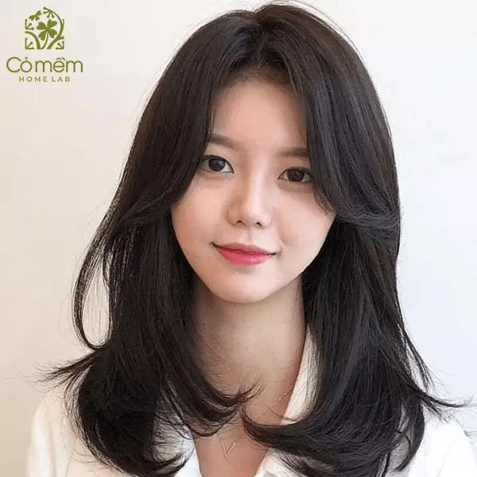
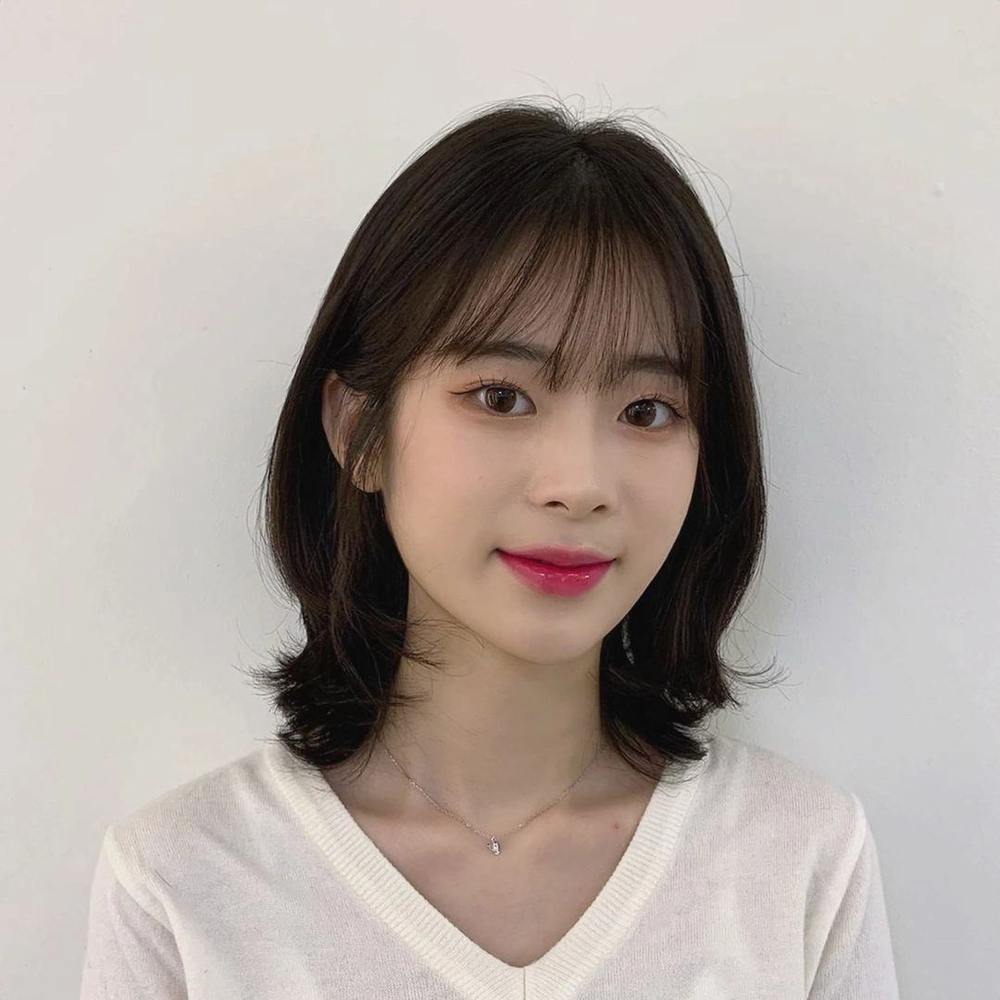
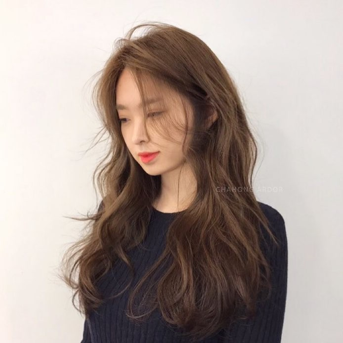
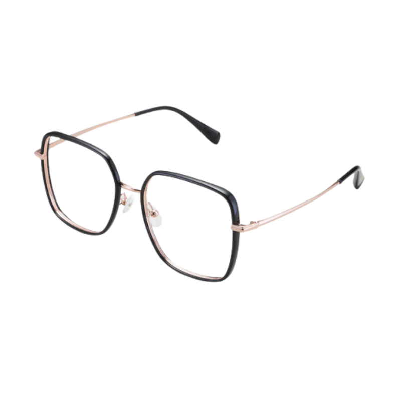
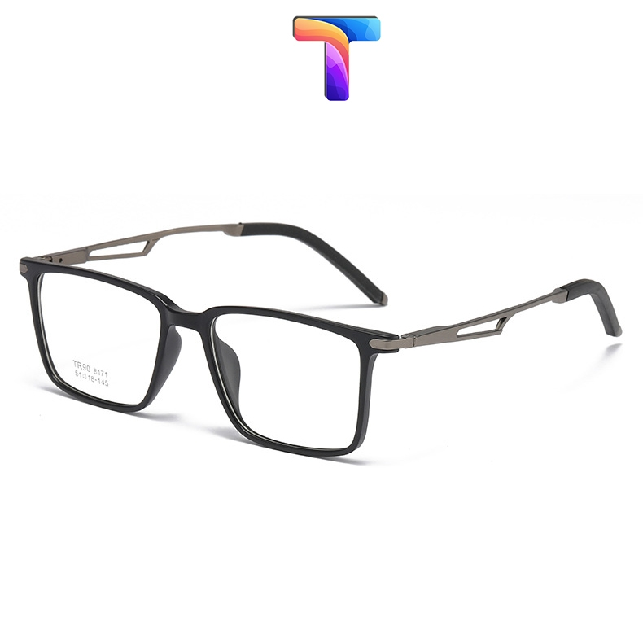

Những lọn tóc tỉa layer mềm mại và phần mái bay lãng mạn như một bản giao hưởng của sự chuyển động, có chủ đích phá vỡ đường thẳng đứng đơn điệu. Kiểu tóc này kiến tạo độ phồng thông minh ở phần gò má, mang lại vẻ ngoài hài hòa, cân đối và thu hút mọi ánh nhìn.
Chi tiếtĐây là lựa chọn "kinh điển" và thông minh bậc nhất giúp tái định nghĩa lại tỷ lệ vàng cho khuôn mặt. Mái thưa không chỉ là một giải pháp hoàn hảo để che đi vầng trán cao, mà còn là điểm nhấn thị giác ngọt ngào, thu hút sự chú ý vào đôi mắt và tạo nên vẻ trẻ trung, tươi mới.
Chi tiếtNhững lọn sóng bồng bềnh bung tỏa mềm mại ở hai bên má chính là cách tuyệt vời nhất để kiến tạo ảo ảnh về chiều rộng, bổ sung thêm khối lượng vào những nơi cần thiết nhất. Kiểu tóc này mang đến nét quyến rũ cổ điển, đậm chất Hollywood và khiến gương mặt trông đầy đặn, có sức sống hơn.
Chi tiếtMột chiếc kính oversized không đơn thuần là phụ kiện thời trang mà còn là một "công cụ" kiến trúc thị giác đầy quyền năng. Nó tạo ra một đường cắt ngang mạnh mẽ và ấn tượng, giúp cân bằng tỷ lệ dài-rộng một cách hiệu quả tức thì, đồng thời khẳng định phong cách sành điệu của chủ nhân.
Chi tiếtKhuôn mặt dài, với những đường nét thanh thoát và cao quý, luôn mang một sức hấp dẫn rất riêng biệt và trí tuệ, gợi nhớ đến vẻ đẹp của giới quý tộc châu Âu và các siêu mẫu thống trị sàn diễn quốc tế. Đây là dáng mặt của sự thông minh, tinh tế, và một vẻ sang trọng không cần gắng gượng. Tuy nhiên, vẻ đẹp này cũng là một con dao hai lưỡi; nếu lựa chọn sai kiểu tóc, phụ kiện hay cách trang điểm, khuôn mặt có thể trở nên gầy gò, thiếu sức sống, lộ rõ vẻ mệt mỏi và làm các đường nét trông nghiêm nghị hơn. Thách thức lớn nhất, nhưng cũng thú vị nhất, nằm ở việc thấu hiểu tường tận từng đường nét và áp dụng những bí quyết làm đẹp chuyên sâu để vẻ đẹp ấy được tôn vinh một cách trọn vẹn, rạng rỡ và tràn đầy năng lượng nhất.

Sai lầm kinh điển và phổ biến nhất mà những người sở hữu khuôn mặt dài thường mắc phải chính là để một mái tóc dài, thẳng đuột, ép sát vào hai bên và rẽ ngôi chính giữa mà không có mái. Kiểu tóc này vô tình tạo ra hai đường thẳng song song hoàn hảo, như hai đường kẻ chỉ, càng nhấn mạnh thêm vào chiều dọc vốn đã chiếm ưu thế, khiến khuôn mặt trông càng dài, hẹp và đôi khi là hốc hác. Thay vào đó, nghệ thuật thực sự nằm ở việc "đánh lừa" thị giác một cách tinh vi, kiến tạo những đường cong mềm mại, những điểm nhấn ngang chiến lược và những tầng lớp tóc bồng bềnh có chủ đích để tạo ra sự cân bằng hoàn hảo, biến khuyết điểm thành ưu điểm độc nhất.
Đây không chỉ là một kiểu tóc, đây là một tác phẩm điêu khắc tinh xảo được thiết kế riêng để tôn vinh khuôn mặt dài. Những lọn tóc được tỉa xếp tầng một cách có chủ ý, đặc biệt là các lớp tóc ngắn hơn được cắt tỉa khéo léo để ôm nhẹ lấy hai bên gò má và xương quai hàm, tạo ra sự chuyển động đa chiều và phá vỡ sự đơn điệu của một đường thẳng. Điểm nhấn đắt giá nhất, linh hồn của kiểu tóc, chính là phần mái bay được cắt dài, mềm mại buông lơi từ thái dương xuống ngang gò má. Chi tiết này không chỉ che bớt phần trán một cách duyên dáng mà còn thu hút mọi sự chú ý vào "cửa sổ tâm hồn" - đôi mắt, đồng thời tạo ra một đường chéo ảo, đánh lạc hướng khỏi chiếc cằm dài. Kỹ thuật tỉa layer thông minh sẽ phân bổ lại khối lượng của mái tóc, giúp tổng thể khuôn mặt trông đầy đặn, mềm mại và tròn trịa hơn một cách đáng kể.

Mái tóc chính là "vũ khí bí mật" để tái cấu trúc lại tỷ lệ khuôn mặt một cách ngoạn mục. Dù là mái thưa Hàn Quốc trong trẻo, mái bằng dày cá tính, mái chéo mềm mại hay mái ngố trên lông mày (baby bangs) phá cách, tất cả đều đóng vai trò như một "cứu tinh" hoàn hảo. Do đặc điểm vầng trán cao và rộng của mặt dài, việc sử dụng tóc mái để "vẽ lại đường chân trời" cho khuôn mặt là một quyết định chiến lược và hiệu quả tức thì. Nó che đi khoảng một phần ba chiều dài, ngay lập tức tạo cảm giác khuôn mặt được rút ngắn lại, trở nên cân đối và hài hòa hơn bao giờ hết. Hơn thế nữa, tóc mái còn là "cỗ máy thời gian" diệu kỳ, mang lại vẻ đẹp trong trẻo, ngọt ngào, giúp bạn "hack tuổi" một cách ngoạn mục và thêm phần năng động, sành điệu, bắt kịp xu hướng.

Nếu bạn là một tín đồ của mái tóc dài thướt tha, đừng bao giờ ngần ngại kết thân với những lọn xoăn sóng bồng bềnh, quyến rũ. Tuy nhiên, điều quan trọng là vị trí của những lọn sóng. Hãy ưu tiên những lọn sóng to, mềm mại như những con sóng xô vào bờ, bắt đầu từ ngang tai hoặc gò má trở xuống, tạo ra một ảo ảnh quang học tuyệt vời về chiều rộng. Khi tóc được uốn xoăn và bung tỏa ra hai bên một cách tự nhiên, nó sẽ bổ sung khối lượng (volume) cần thiết vào khu vực từ thái dương đến gò má, nơi khuôn mặt dài thường thiếu độ đầy đặn. Điều này giúp "kéo" khuôn mặt ra theo chiều ngang, làm giảm cảm giác hốc hác và gầy gò. Một mái tóc xoăn sóng không chỉ mang lại vẻ đẹp gợi cảm, đậm chất Hollywood cổ điển mà còn là minh chứng cho sự trưởng thành, quyến rũ và đầy quyền lực.
Đối với gương mặt sở hữu trục dọc nổi bật, việc kiến tạo những "điểm dừng" thị giác theo chiều ngang là một nghệ thuật đỉnh cao. Trong đó, gọng kính chính là vũ khí hiệu quả, phong cách và thông minh nhất. Hãy quên đi những chiếc gọng kính nhỏ bé, mảnh mai, không vành hoặc có hình dáng hẹp; chúng sẽ bị "nuốt chửng" bởi chiều dài của khuôn mặt, vô tình khiến các đường nét càng thêm dài và thiếu cân đối. Lựa chọn của bạn phải là những thiết kế ấn tượng, có cấu trúc và có chủ đích rõ ràng trong việc tái định hình tỷ lệ.

Một chiếc kính oversize không chỉ là một công cụ quang học, mà là một món trang sức quyền lực, một bản tuyên ngôn thời trang đích thực. Bằng cách chiếm một diện tích đáng kể trên gương mặt, nó thiết lập một "khung tranh" mới mẻ, thu hút mọi ánh nhìn vào đôi mắt và phần trung tâm thay vì chiều dài tổng thể. Chiếc kính phá vỡ hoàn toàn trục dọc của cấu trúc xương, tạo ra một đường phân chia ngang mạnh mẽ và rõ rệt, từ đó đánh lừa thị giác rằng chiều ngang đã được nới rộng ra đáng kể, mang lại một tỷ lệ cân đối đến bất ngờ. Hãy ưu tiên những dáng kính có chiều cao gọng lớn, như dáng mắt mèo, bươm bướm hoặc vuông bo góc.

Để tăng thêm phần cá tính và cấu trúc cho gương mặt, hãy mạnh dạn tìm đến những cặp kính có viền vuông hoặc chữ nhật với khung dày, tối màu. Những góc vuông vức, dứt khoát của gọng kính sẽ tạo ra một sự tương phản đầy thú vị và thông minh với những đường nét mềm mại, thon dài vốn có của khuôn mặt, mang đến một vẻ đẹp tri thức, mạnh mẽ và cực kỳ cá tính. Dáng mặt này cho phép bạn thoải mái thử nghiệm với nhiều chất liệu gọng độc đáo, từ nhựa acetate màu đồi mồi sang trọng cho đến gọng kim loại titan bản lớn hiện đại, miễn là chúng tạo ra được điểm nhấn ngang ấn tượng và thể hiện được cái tôi của bạn.
Nghệ thuật trang điểm chính là khả năng điêu khắc ánh sáng và bóng tối để kiến tạo tỷ lệ hoàn hảo mà bạn mong muốn. Với Contour (Tạo khối), nguyên tắc "tối thu vào, sáng đẩy ra" được ứng dụng triệt để và tinh tế. Hãy dùng một loại phấn khối có tông lạnh (để tạo bóng đổ tự nhiên nhất), thoa một lớp mỏng nhẹ ngay dưới đường chân tóc ở đỉnh trán và một chút ở phần đáy cằm, tán đều để không tạo vệt. Hai vùng tối được tạo ra một cách vô hình này sẽ "ép" hai cực của khuôn mặt lại gần nhau hơn, tạo ra một ảo ảnh về một tổng thể ngắn và hài hòa hơn một cách diệu kỳ.
Với phấn má, đây chính là chìa khóa vàng để tạo chiều rộng. Hãy quên đi cách đánh chéo từ gò má lên thái dương vì nó sẽ càng làm mặt bạn dài ra. Thay vào đó, hãy mỉm cười để xác định điểm cao nhất của gò má (trái táo), sau đó tán phấn má hồng THEO MỘT ĐƯỜNG NGANG, bắt đầu từ điểm "trái táo" này và kéo thẳng về phía mang tai. Hãy tưởng tượng bạn đang vẽ một dải lụa màu hồng đào hoặc cam san hô vắt ngang qua gương mặt. Kỹ thuật này không chỉ mang lại vẻ ửng hồng khỏe khoắn, tươi tắn, mà còn là một "thủ thuật" kiến trúc tài tình, "bẻ gãy" trục dọc và mở rộng khuôn mặt về hai bên một cách tự nhiên và mềm mại nhất.